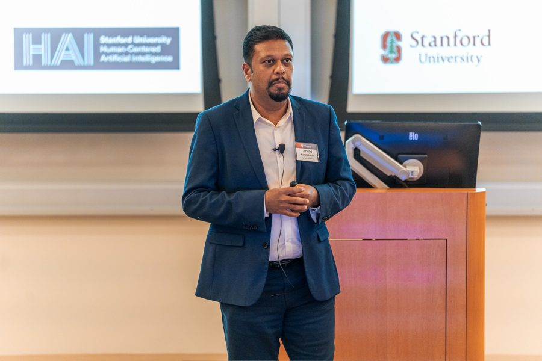
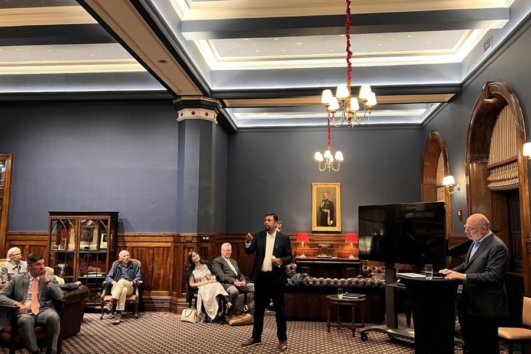

Speaking & Advising

An evidence-based voice on enterprise AI. Arvind’s talks draw on years of fieldwork inside companies adopting AI, not forecasts, so they focus on what actually moves value and adoption: strategy, structure, roles, and metrics.
Thinkers50 Radar · Faculty affiliate, Stanford HAI and Digital Economy Lab
Research in ASQ, Organization Science, and HBR · Covered by The New York Times, The Wall Street Journal, the Financial Times, and MSNBC
Watch & Listen

Panel · Federal Reserve Bank of New York · October 6, 2026
AI in the Workplace: Behaviors, Incentives & Inequality
Governance & Culture Reform Conference. Moderated by Kartik Athreya, Head of Research & Statistics at the New York Fed, with Roshni Raveendhran (UVA Darden).
The video starts where Arvind begins speaking (2:56:39 in the full conference recording). Open in a new tab · Event page
 Upskilling vs. Deskilling Spirals in the Wake of Gen AI within Organizations
Talk · AI at Wharton, Business & Generative AI Workshop, San Francisco (20 min)
Upskilling vs. Deskilling Spirals in the Wake of Gen AI within Organizations
Talk · AI at Wharton, Business & Generative AI Workshop, San Francisco (20 min)
 The Future of AI at Work
Podcast · Stanford Engineering, The Future of Everything with Russ Altman (32 min)
The Future of AI at Work
Podcast · Stanford Engineering, The Future of Everything with Russ Altman (32 min)
 HAI Seminar: Industry Conversation with Instacart
Seminar · Stanford HAI, with Alexandr Lenk of Instacart (2026)
HAI Seminar: Industry Conversation with Instacart
Seminar · Stanford HAI, with Alexandr Lenk of Instacart (2026)
 AI in the Workplace: Rethinking Skill Development
Webinar · Stanford Online (57 min)
AI in the Workplace: Rethinking Skill Development
Webinar · Stanford Online (57 min)
 Foundation Models in the Workplace
Keynote · Notre Dame–IBM Technology Ethics Lab symposium (24 min)
Foundation Models in the Workplace
Keynote · Notre Dame–IBM Technology Ethics Lab symposium (24 min)
 How ChatGPT and Generative AI Will Shape the Future of Work
Webinar · Stanford Online (26 min)
How ChatGPT and Generative AI Will Shape the Future of Work
Webinar · Stanford Online (26 min)
The Future of AI at Work is also on Apple Podcasts.




Signature Talks
Every talk can be delivered as a keynote or expanded into a working session, and each is tailored to the audience and industry.
Same Models, Different Results: Where Lasting AI Advantage Comes From
Every competitor can buy the same frontier models at the same price, so model access alone builds nothing durable. Drawing on multi-year research inside enterprises, Arvind shows what does compound: proprietary data, encoded enterprise context, and evaluation systems that define “good” in your own domain. Leaders leave knowing what to own, where to stay deliberately swappable, and which three moves to make next.
Best for: CEOs and boards, leadership offsites, strategy summits
Escaping Pilot Purgatory: Turning AI Experiments into Enterprise Value
Most enterprises now have dozens of AI pilots, yet few have moved the P&L. This talk explains why initiatives stall between demo and production (unclear ownership, untouched workflows, decision rights no one redesigned) and lays out a research-based playbook for scaling: build-buy-partner choices, the right operating model, and the organizational changes that make AI stick.
Best for: Transformation and technology leaders, COOs, internal AI summits
Stop Selling AI as a Productivity Tool: How Leaders Get People to Embrace AI
In a study of nearly two years inside a law firm, two near-identical teams received the same AI tool. The team whose manager framed it as a way to enrich their jobs, and backed that up with time, training, and new metrics, used it 58% more and experimented with it 70% more. Arvind explains why productivity framing backfires and what leaders must change to get real adoption.
Best for: All-hands meetings, HR and people leaders, change programs, association conferences
What Is AI Really Worth? Measuring Value, Not Volume
Time saved, tokens consumed, and seats licensed are easy to count, and they reward the wrong behavior. Arvind shows where claimed productivity gains quietly evaporate into downstream rework, why the biggest returns come from expanding and reconfiguring work rather than substituting for it, and how to build metrics that connect AI to customers, revenue, and capacity.
Best for: CFOs, finance and operations leaders, boards, customer and investor events
Agentic AI in the Enterprise: From Demo to Dependable
AI agents demo beautifully, then stall. This talk explains why agentic initiatives break at the hand-offs between agents, systems, and the people accountable for outcomes, and what separates the firms that scale them: orchestration patterns, human-in-the-loop controls, evaluation infrastructure, and governance that keeps domain experts engaged rather than sidelined.
Best for: CIO/CTO forums, technology and operations leaders, AI conferences
The Organization Is the Bottleneck: Leading Change in the AI Era
AI changes who holds expertise, who has authority, and whose work gets valued. That is why initiatives stall even when the technology works. Using three lenses (organizational design, power and politics, and culture), Arvind helps leaders diagnose the real barriers to adoption and redesign roles, hand-offs, and incentives with the people who do the work.
Best for: Leadership development programs, HR and change leaders, executive education
Formats
- Keynote · 45–60 min
A research-based talk for conferences, offsites, and all-hands meetings. - Interactive executive session · 90 min
Frameworks and enterprise cases, with discussion built around the group’s own challenges. - Working session · half or full day
The team leaves with something built: a value map, a 12-month roadmap, or a maturity diagnosis. - Executive program · multi-day
Sessions combined into a program for leadership teams and executive education.
In person or virtual. Every engagement is tailored after a short scoping call with the sponsor.
Executive session catalog
Sessions most often requested for executive education and in-house programs.
I. AI strategy & execution
- AI Strategy and Execution: From Vision to Enterprise Value. An enterprise-wide framework for managing AI as a strategic asset: the three waves of AI (predictive, generative, agentic), build-buy-partner choices, escaping “pilot purgatory,” and connecting AI to measurable value. Closes with a 90-day roadmapping exercise.
- Leading with AI: Executive Visioning & Roadmapping. A working session for leadership teams on where durable advantage comes from in an AI-driven market, followed by a structured visioning and roadmapping exercise on a five-stage AI maturity model.
II. Building & scaling enterprise AI
- Enterprise AI to Create Business Value. A “three lenses” framework (strategic design, power and politics, and culture) to structure, scale, and redesign work around AI, including machine-in-the-loop workflows and operating-model choices.
- Agentic AI in Enterprises: Adoption, Orchestration & Scaling. Why agentic initiatives stall between pilot and production, and how leaders handle orchestration (multi-agent coordination, human-in-the-loop controls, evaluation infrastructure) and scaling across functions.
III. People, work & organizational change
- AI, Change Management & Organizational Transformation. The change management behind building in-house AI capability: why internal efforts stall, how to design the division of labor across the AI stack, and why to reorganize workflows rather than automate isolated tasks.
- Reskilling, Role Redesign & Human–AI Augmentation. The “last-mile” problem of adoption and a task-first approach to reskilling and role and workflow redesign, anchored by a hands-on task-mapping exercise.
IV. Governance, metrics & value
- Organizational Governance, Implementation & Use of AI. Two frames for capturing value (substitution versus pie expansion), governing across the AI stack, and navigating the “jagged frontier” of AI capability.
- Metrics for Measuring Value from AI. Why input-centric metrics (time saved, tokens, lines of code) backfire, and two better anchors: the dollar value of higher-value work performed per role, and business-unit capacity expansion.
Selected Clients
Executive sessions for leaders at organizations including:


- Professional services
McKinsey & Company · Boston Consulting Group · Accenture · PwC · Deloitte · Infosys - Financial services
Barclays · Charles Schwab · TIAA · National Australia Bank · Bank of New Zealand - Consumer & retail
PepsiCo · Unilever · Walmart · Nike · Henkel - Healthcare & life sciences
Novo Nordisk · DaVita · American Heart Association
Stages & Appearances
Invited talks at The AI Summit New York, the Imagination in Action AI Summit at Google, the World Economic Forum, the Federal Reserve Bank of New York, the Wharton Business & Generative AI Conference, Harvard Business School, MIT Sloan, Columbia Business School, the Institute for Advanced Study (Princeton), and Stanford HAI.
- Dec 9–10, 2026 · Upcoming
The AI Summit New York - Oct 6, 2026
Federal Reserve Bank of New York, Governance & Culture Reform Conference. Panel: “AI in the Workplace: Behaviors, Incentives & Inequality”. Watch the panel - Sept 14, 2026
Imagination in Action AI Summit at Google. Panel: “Who Does the Work Now”
Press & Writing
- Harvard Business Review · Aug 2026
AI Experiments Need Domain Experts. Here’s How to Support Them. With Katherine Kellogg and Batia Wiesenfeld. - Stanford HAI · Oct 2026
Want Employees to Embrace AI? Stop Selling It as a Productivity Tool. Coverage of Arvind’s field study inside a law firm. - Thinkers50
Thinkers50 Radar profile. The global list of management thinkers shaping the future of business.
Research also covered by The New York Times, The Wall Street Journal, The Washington Post, the Financial Times, and MSNBC.
Speaker Bio
Arvind Karunakaran is an Assistant Professor of Management Science & Engineering (and, by courtesy, Sociology) at Stanford University, and a faculty affiliate of the Stanford Institute for Human-Centered AI (HAI) and the Stanford Digital Economy Lab. Named to the Thinkers50 Radar, he studies what actually happens inside organizations when they adopt AI, and why the bottleneck is rarely the technology. His multi-year field research explains why AI pilots stall between demo and production, why conventional ROI metrics reward usage instead of value, and how leaders redesign roles, workflows, and governance so that AI gains compound.
His work appears in Administrative Science Quarterly, Organization Science, Research Policy, and Harvard Business Review, and has been covered by The New York Times, The Wall Street Journal, the Financial Times, and MSNBC. He has led executive sessions for leaders at McKinsey, BCG, Accenture, Walmart, PepsiCo, Nike, Barclays, Charles Schwab, and Novo Nordisk. A computer science engineer by training with prior work experience in the technology and consulting industries, he holds a master’s in Information Science and Technology from Penn State and a PhD in Management (Information Technology and Organizations) from the MIT Sloan School of Management.
Short bio for programs and listings
Arvind Karunakaran is an assistant professor at Stanford University and a faculty affiliate of the Stanford Institute for Human-Centered AI (HAI). Named to the Thinkers50 Radar, he draws on multi-year field research inside companies to show leaders why most AI initiatives stall before they reach the P&L, and what it takes in strategy, structure, roles, and metrics to turn AI into lasting value. He received his PhD from the MIT Sloan School of Management.
Introduction for an emcee to read aloud
“Our next speaker studies what really happens when companies bring AI into the workplace: not in the lab, but inside the teams that have to make it work. Arvind Karunakaran is on the faculty of Stanford University in Management Science and Engineering, and is a faculty affiliate of Stanford’s Institute for Human-Centered AI. He was named to the Thinkers50 Radar, the global list of management thinkers shaping the future of business. His research has been published in Harvard Business Review and covered by The New York Times and The Wall Street Journal, and he works with leadership teams at organizations from McKinsey and Accenture to Nike and PepsiCo. Please join me in welcoming Arvind Karunakaran.”
High-resolution headshots and event photos are available on request.
Startup Advising
Arvind advises early-stage startups as a technical and strategic advisor, helping founders make sound product, go-to-market, and organizational decisions as they build and scale.
- AI. Where AI creates durable advantage, and how to build products and capabilities around it rather than bolting it on.
- Agentic governance. Oversight, accountability, human-in-the-loop controls, and evaluation for AI agents that act with increasing autonomy.
- Deployment. Moving from prototype to production: architecture, integration with existing workflows, and the operating model needed to run AI reliably.
- Adoption. Why users and organizations resist or underuse new technology, and how to design for trust, training, and workflow change.
- ROI. Measuring the value of AI beyond usage metrics, and tying it to cost, revenue, and capacity outcomes.
- Platforms and two-sided markets. Network effects, pricing, governance, and balancing the needs of both sides of a market.
Interested in a keynote, executive session, workshop, or advisory engagement? Email arvindka@stanford.edu with the date, location, audience, and format you have in mind.